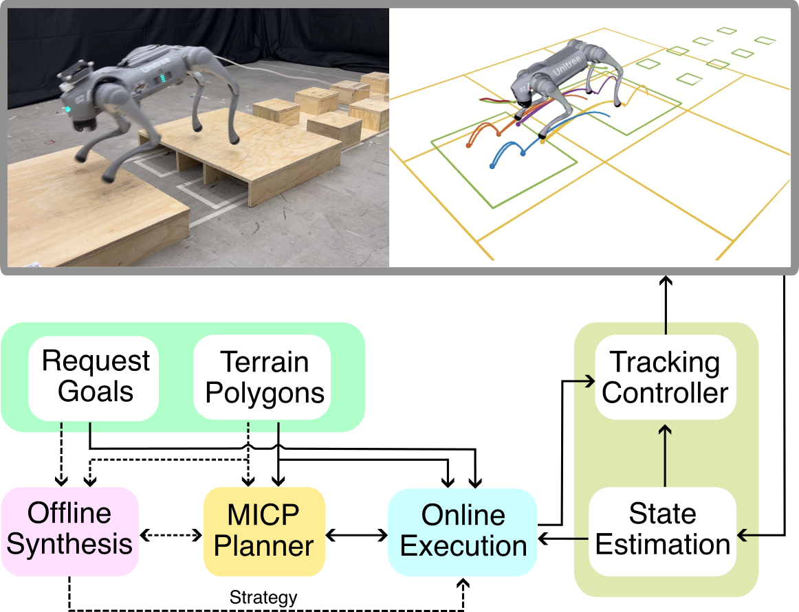

We propose an integrated planning framework for quadrupedal locomotion over dynamically changing, unforeseen terrains. Existing approaches either rely on heuristics for instantaneous foothold selection--compromising safety and versatility--or solve expensive trajectory optimization problems with complex terrain features and long time horizons. In contrast, our framework leverages reactive synthesis to generate correct-by-construction controllers at the symbolic level, and mixed-integer convex programming (MICP) for dynamic and physically feasible footstep planning for each symbolic transition. We use a high-level manager to reduce the large state space in synthesis by incorporating local environment information, improving synthesis scalability. To handle specifications that cannot be met due to dynamic infeasibility, and to minimize costly MICP solves, we leverage a symbolic repair process to generate only necessary symbolic transitions. During online execution, re-running the MICP with real-world terrain data, along with runtime symbolic repair, bridges the gap between offline synthesis and online execution. Through extensive simulation and hardware experiments, we demonstrate our framework's capabilities to discover missing locomotion skills and react promptly in safety-critical environments, such as scattered stepping stones and rebars.
Unstructured Terrain with a Gap
Fig.1 System Diagram
We manage complexity at both symbolic and physical levels. At the symbolic level, we leverage reactive synthesis to decompose the local navigation problem into manageable subproblems whose solutions can be reused by synthesis for different scenarios. Each subproblem corresponds to finding controls for a short-horizon symbolic transition and is solved via a MICP to provide physical feasibility certificates of the transition. As shown in Fig.1, our framework consists of offline synthesis, online execution, and low-level tracking control. During the offline phase, we generate a set of potentially useful skills and corresponding locomotion gaits based on predefined terrain states and goals, while leveraging symbolic repair to find missing yet necessary symbolic transitions. At runtime, we leverage runtime repair to identify new symbolic transitions necessary for unforeseen terrain configurations or intermediate request goals.
Side View
Front View